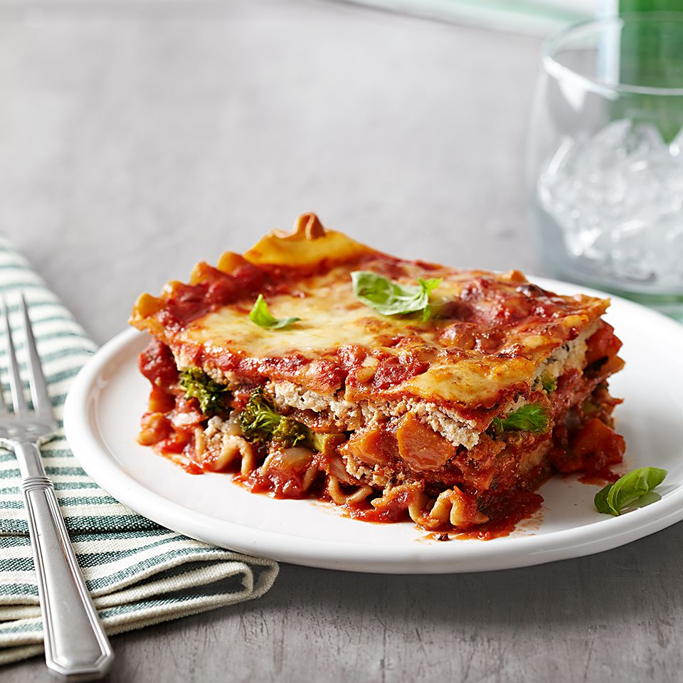

Veggie Lasagna

Description
This vegetarian lasagna recipe is my favorite dish to make for family and friends! Filled with savory roasted vegetables, it's healthy and delicious.
Ingredients
- 8 ounces carrots, halved lengthwise and cut into 2-inch pieces (2 cups)
- 1 ½ cups onion, cut in 1/2-inch thick slices
- 3 tablespoons olive oil
- 4 cloves garlic, minced
- ¼ teaspoon crushed red pepper
- ¼ teaspoon salt
- 4 cups chopped fresh broccoli
- 9 whole grain lasagna noodles
- 1 ½ cups part-skim ricotta cheese
- ¼ cup shredded part-skim mozzarella cheese (1 ounce)
- ½ teaspoon Italian seasoning, crushed
- ½ teaspoon freshly ground black pepper
- Nonstick cooking spray
- 1 (24 ounce) jar tomato-basil pasta sauce, such as Classico®
- ¾ cup shredded part-skim mozzarella cheese (3 ounces)
- ¾ cup Parmesan cheese, shredded (1 ounce)
- ¼ cup small fresh basil leaves or torn fresh basil leaves (see Tip)
Steps
Step 1
- Preheat oven to 450 degrees F. Combine carrots, onion, olive oil, garlic, crushed red pepper, and salt in a bowl; toss to coat. Spread in a single layer on a 15x10x1-inch baking pan. Bake 25 to 30 minutes or until vegetables are browned and just tender, stirring once halfway through. Cool and coarsely chop. Stir in broccoli.
Step 2
- Meanwhile, cook lasagna noodles according to package directions, omitting salt and fat.
Step 3
- In a medium bowl, combine ricotta cheese, 1/4 cup mozzarella cheese, Italian seasoning, and black pepper
Step 4
- Reduce oven temperature to 375 degrees F. Coat a 2-quart rectangular baking dish with cooking spray.
Step 5
- Spread 1/2 cup pasta sauce in the bottom of the prepared dish. Arrange 3 noodles over sauce. Top with half of the vegetable mixture, half of ricotta mixture, and 1/2 cup pasta sauce. Arrange 3 noodles over sauce; top with remaining vegetable mixture, ricotta mixture, 1/2 cup pasta sauce and remaining 3 noodles. Spread remaining sauce over noodles. Sprinkle with 3/4 cup mozzarella cheese and Parmesan cheese.
Step 6
- Bake, covered, for 45 minutes. Uncover and bake 10 to 15 minutes more or until golden and bubbly. Let stand 15 to 20 minutes. Sprinkle with fresh basil before serving.